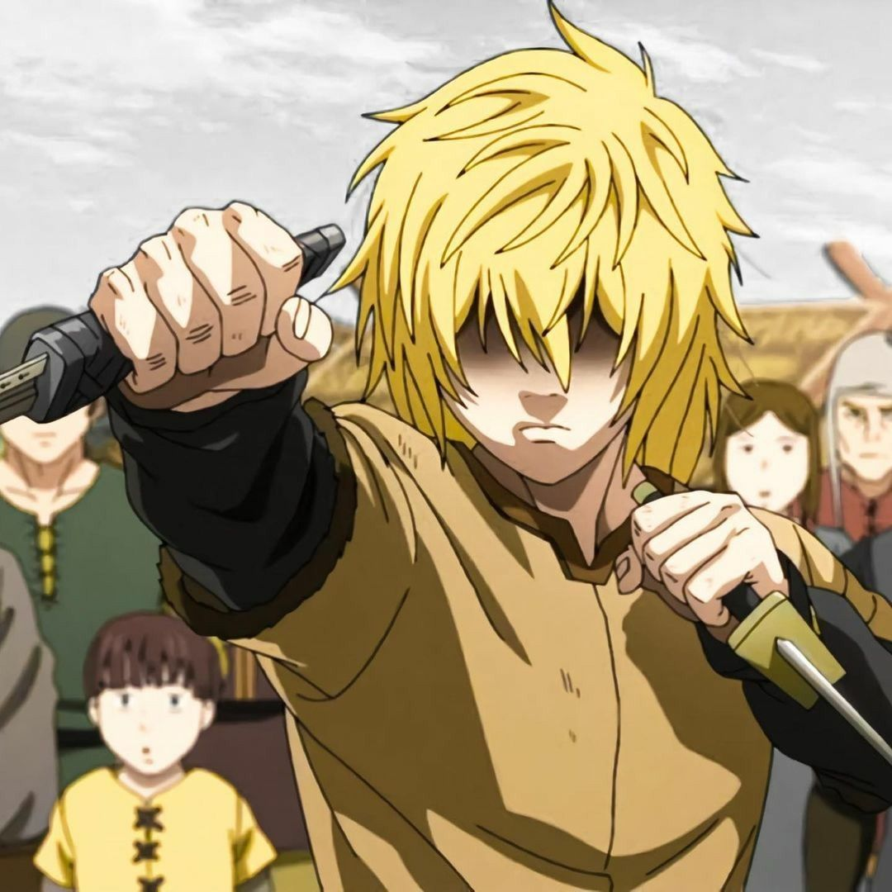

Философия Торфинна
Эволюция взглядов от мести к миру
Месть
"Я убью тебя, Аскеладд!"
Сомнение
"Зачем я продолжаю сражаться?"
Пробуждение
"У настоящего воина нет врагов"
Мир
"Мы создадим страну без рабства"

"Я убью тебя, Аскеладд!"
— Торфинн в юностиПуть трансформации
Философский путь Торфинна — это история трансформации от слепой жажды мести к глубокому пониманию ценности человеческой жизни.
Его эволюция отражает основные темы манги: поиск истинного смысла жизни, отказ от насилия как решения проблем и стремление создать лучшее общество.
Ключевые принципы философии Торфинна:
- Настоящая сила — в умении защищать, а не нападать
- У настоящего воина нет врагов
- Месть порождает только новое насилие
- Истинная храбрость — в умении прощать
- Будущее строится на взаимопонимании, а не на завоевании
Влияние на мировоззрение
Отец Торс
Аскеладд
Эйнар
Собственный опыт